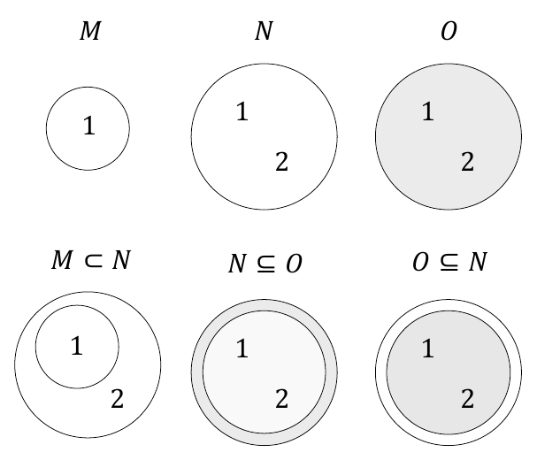
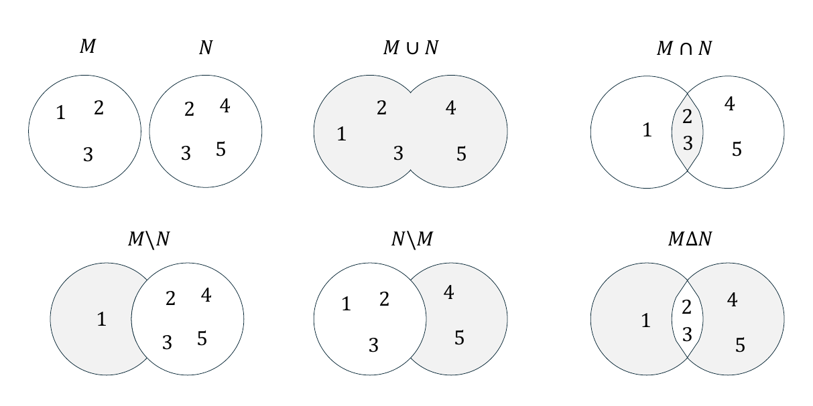
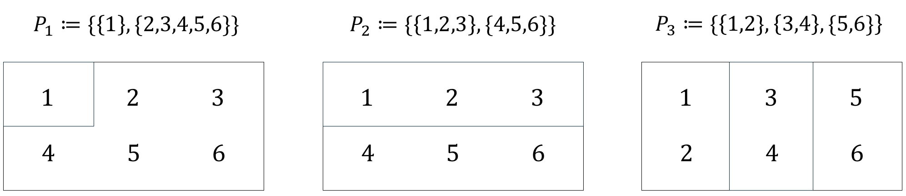
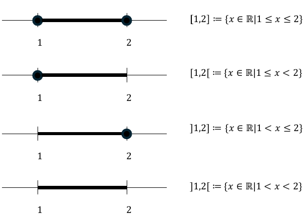
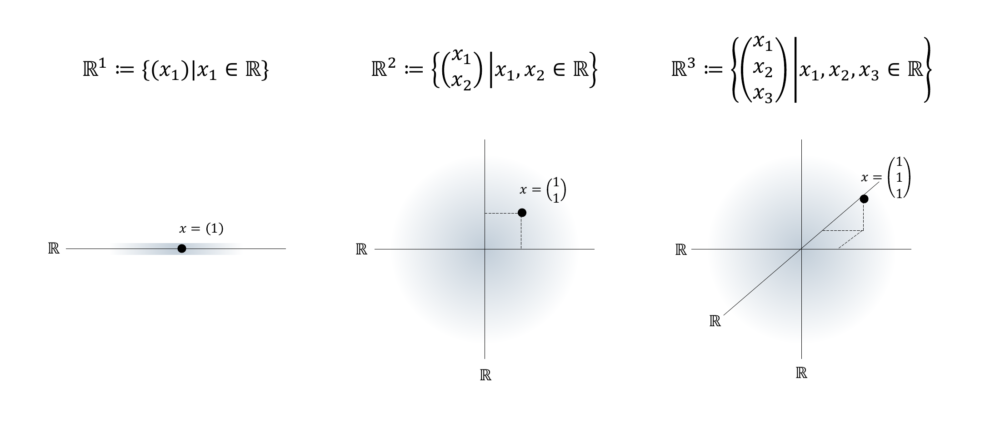

2 Sets
2.1 Basic definitions
Sets collect mathematical objects and form the foundation of modern mathematics. We begin with the following definition.
Definition 2.1 (Sets) Following Cantor (1895), a set \(M\) is defined as “a collection into a whole of definite, distinct objects \(m\) of our intuition or of our thought (which are called the elements of the set)”. We write \[\begin{equation} m \in M \mbox{ or } m \notin M \end{equation}\] to express that \(m\) is an element or not an element of \(M\), respectively.
There are at least the following ways of defining sets:
- Listing the elements in curly braces, for example \(M := \{1,2,3\}\).
- Specifying the properties of the elements, for example \(M := \{x \in \mathbb{N}|x < 4\}\).
- Equating the set with another uniquely defined set, for example \(M := \mathbb{N}_3\).
The notation \(\{x \in \mathbb{N}|x < 4\}\) is read as “\(x \in \mathbb{N}\) such that \(x < 4\)”, where the meaning of \(\mathbb{N}\) will be explained below. It is important to recognize that sets are unordered mathematical objects, that is, the order in which the elements of a set are listed does not matter. For example, \(\{1,2,3\}\), \(\{1,3,2\}\), and \(\{2,3,1\}\) denote the same set, namely the set of the first three natural numbers.
Basic relations between several sets are fixed in the next definition.
Definition 2.2 (Subsets and set equality) Let \(M\) and \(N\) be two sets.
- A set \(M\) is called a subset of a set \(N\) if, for every element \(m \in M\), we also have \(m \in N\). If \(M\) is a subset of \(N\), we write \[\begin{equation} M \subseteq N \end{equation}\] and call \(M\) a subset of \(N\) and \(N\) a superset of \(M\).
- A set \(M\) is called a proper subset of a set \(N\) if, for every element \(m \in M\), we also have \(m \in N\), but there is at least one element \(n \in N\) for which \(n \notin M\). If \(M\) is a proper subset of \(N\), we write \[\begin{equation} M \subset N. \end{equation}\]
- Two sets \(M\) and \(N\) are called equal if, for every element \(m \in M\), we also have \(m \in N\), and if, for every element \(n \in N\), we also have \(n \in M\). If the sets \(M\) and \(N\) are equal, we write \[\begin{equation} M = N. \end{equation}\]
Example
For example, consider the sets \(M := \{1\}\), \(N := \{1,2\}\), and \(O := \{1,2\}\). Then, by the definitions above, \(M \subset N\), because \(1 \in M\) and \(1 \in N\), but \(2 \in N\) and \(2 \notin M\). Furthermore, \(N \subseteq O\), because \(1 \in N\) and \(1 \in O\), as well as \(2 \in N\) and \(2 \in O\), and there is no element of \(O\) that is not in \(N\). Likewise, \(O \subseteq N\), because \(1 \in O\) and \(1 \in N\), as well as \(2 \in O\) and \(2 \in N\), and there is no element of \(N\) that is not in \(O\). Finally, we even have \(N = O\), because, for every element \(n \in N\), we also have \(n \in O\), and at the same time, for every element \(o \in O\), we also have \(o \in N\). We represent these relations schematically by means of Venn-Euler diagrams in Figure 2.1.

An important property of a set is the number of elements it contains. This is called the cardinality of the set.
Definition 2.3 (Cardinality) The number of elements of a set \(M\) is called its cardinality and is denoted by \(|M|\).
A special set is the set without elements.
Definition 2.4 A set with cardinality zero is called the empty set and is denoted by \(\emptyset\).
As examples, let \(M := \{1,2,3\}\), \(N = \{a,b,c,d\}\), and \(O := \emptyset\). Then \(|M| = 3\), \(|N| = 4\), and \(|O| = 0\).
For every set, one can consider the set of all subsets of this set. This leads to the important concept of the power set.
Definition 2.5 (Power set) The set of all subsets of a set \(M\) is called the power set of \(M\) and is denoted by \(\mathcal{P}(M)\).
Note that the empty subset of \(M\) and \(M\) itself are also always elements of \(\mathcal{P}(M)\). We first consider four examples of the concept of a power set.
Let \(M_0 := \emptyset\) be the empty set. Then \[\begin{equation} \mathcal{P}(M_0) = \{\emptyset\}. \end{equation}\]
Let \(M_1\) be the one-element set \(M_1 := \{a\}\). Then \[\begin{equation} \mathcal{P}(M_1) = \{\emptyset,\{a\}\}. \end{equation}\]
Let \(M_2 := \{a,b\}\). Then \(M_2\) has both one-element and two-element subsets, and \[\begin{equation} \mathcal{P}(M_2) = \{\emptyset,\{a\}, \{b\}, \{a,b\}\}. \end{equation}\]
Finally, let \(M_3 := \{a,b,c\}\). Then \(M_3\) has, among others, one-element, two-element, and three-element subsets, and \[\begin{equation} \mathcal{P}(M_3) = \{\emptyset, \{a\},\{b\},\{c\},\{a,b\},\{a,c\},\{b,c\},\{a,b,c\}\}. \end{equation}\]
Theorem 2.1 (Cardinality of the power set) Given a set \(M\) with cardinality \(|M| = n\), and let \(\mathcal{P}(M)\) be its power set. Then \(|\mathcal{P}(M)| = 2^n\).
Proof. To prove the statement of the theorem, we associate each element \(P\) of the power set of \(M\) uniquely with a binary sequence of length \(n\), where the entry at the \(i\)-th position represents whether the \(i\)-th element of \(M\) is an element of \(P\) or not. For example, let \(M := \{m_1,m_2,m_3\}\) and \(P := \{m_2,m_3\}\). Then \(P\) corresponds to the binary sequence \(011\). The empty set \(P := \emptyset\) corresponds to the binary sequence \(000\), and the original set \(P = M\) corresponds to the binary sequence \(111\). Thus the question is how many unique binary sequences of length \(n\) there are. Since each element of the sequence has two possible states, there are \(n\) factors \(2 \cdot 2 \cdots 2\), that is, \(2^n\).
In the examples above, we have the cases
- \(|M_0| = 0 \Rightarrow |\mathcal{P}(M_0)| = 2^0 = 1\),
- \(|M_1| = 1 \Rightarrow |\mathcal{P}(M_1)| = 2^1 = 2\),
- \(|M_2| = 2 \Rightarrow |\mathcal{P}(M_2)| = 2^2 = 4\),
- \(|M_3| = 3 \Rightarrow |\mathcal{P}(M_3)| = 2^3 = 8\),
as can be verified by counting the elements of the corresponding power sets.
2.2 Operations
Two sets can be combined with one another in different ways. The result of such a combination is another set. We call the combination of two sets a set operation and give the following definitions.
Definition 2.6 (Set operations) Let \(M\) and \(N\) be two sets.
The union of \(M\) and \(N\) is defined as the set \[\begin{equation} M \cup N := \{x | x \in M \lor x \in N\}, \end{equation}\] where \(\lor\) is to be understood according to Definition 1.4 as a non-exclusive or, that is, as and/or.
The intersection of \(M\) and \(N\) is defined as the set \[\begin{equation} M \cap N := \{x | x \in M \land x \in N\}. \end{equation}\] If \(M\) and \(N\) satisfy \(M \cap N = \emptyset\), then \(M\) and \(N\) are called disjoint.
The difference of \(M\) and \(N\) is defined as the set \[\begin{equation} M\setminus N := \{x | x \in M \land x \notin N\}. \end{equation}\] The difference of \(M\) and \(N\) is also called, especially when \(N \subseteq M\), the complement of \(N\) with respect to \(M\) and is denoted by \(N^c\). In this context, \(M\) is also called the basic set or the universe.
The symmetric difference of \(M\) and \(N\) is defined as the set \[\begin{equation} M \Delta N := \{x|(x \in M \lor x \in N) \land x \notin M \cap N\}. \end{equation}\] The symmetric difference can therefore be understood as an exclusive or.
Example
As an example, consider the sets \(M := \{1,2,3\}\) and \(N := \{2,3,4,5\}\). Then
- \(M \cup N = \{1,2,3,4,5\}\), because \(1 \in M\), \(2 \in M\), \(3 \in M\), \(4 \in N\), and \(5 \in N\).
- \(M \cap N = \{2,3\}\), because only for \(2\) and \(3\) do we have \(2 \in M, 3 \in M\) and also \(2 \in N, 3 \in N\). For \(1\), we only have \(1 \in M\), and for \(4\) and \(5\), we only have \(4 \in N\) and \(5 \in N\).
- \(M \setminus N = \{1\}\), because \(1 \in M\), but \(1 \notin N\), and \(2 \in M\), but also \(2 \in N\).
- \(N \setminus M = \{4,5\}\), because \(4 \in N\) and \(5 \in N\), but \(4 \notin M\) and \(5 \notin M\). This shows in particular that the difference of \(M\) and \(N\) is not symmetric, that is, it is not necessarily the case that \(M\setminus N\) equals \(N \setminus M\).
- \(M \Delta N = \{1,4,5\}\), because \(1 \in M\), but \(1 \notin \{2,3\}\), \(2 \in M\), but \(2 \in \{2,3\}\), \(3 \in M\), but \(3 \in \{2,3\}\), \(4 \in N\), but \(4 \notin \{2,3\}\), and \(5 \in N\), but \(5 \notin \{2,3\}\).
Figure 2.2 visualizes the set operations considered in this example.

Finally, we introduce the concept of a partition of a set.
Definition 2.7 (Partition) Let \(M\) be a set, and let \(P := \{N_i\}\) be a set of sets \(N_i\) with \(i = 1,...,n\), such that \[\begin{equation} \left(M = \cup_{i=1}^n N_i\right) \land \left(N_i \cap N_j = \emptyset \mbox{ for } i,j = 1,...,n \mbox{ and } i \neq j \right). \end{equation}\] Then \(P\) is called a partition of \(M\).
The partition of a set therefore corresponds to splitting the set into disjoint subsets. Partitions are generally not unique, that is, there are usually several ways to partition a given set.
As an example, consider the set \(M := \{1,2,3,4,5,6\}\). Then \(P_1 := \{\{1\}, \{2,3,4,5,6\}\}\), \(P_2 := \{\{1,2,3\}, \{4,5,6\}\}\), and \(P_3 := \{\{1,2\},\{3,4\}, \{5,6\}\}\) are three possible partitions of \(M\). Figure 2.3 visualizes the partitions considered in this example.

2.3 Special sets
Number sets
In natural science, one attempts to describe phenomena of the world that are intuitively identified as discrete or continuous by means of numbers. Depending on the type of phenomenon, different number sets are suitable for this purpose. Mathematics provides, among others, the number sets given in the following definition.
Definition 2.8 (Number sets) The following denote:
- \(\mathbb{N}\,\,\, := \{1,2,3,...\}\) the natural numbers,
- \(\mathbb{N}_n := \{1,2,3,...,n\}\) the natural numbers of order \(n\),
- \(\mathbb{N}^0 := \mathbb{N} \cup \{0\}\) the natural numbers and zero,
- \(\mathbb{Z}\,\,\, := \{...,-3,-2,-1,0,1,2,3...\}\) the integers,
- \(\mathbb{Q}\,\,\, := \{\frac{p}{q}|p \in \mathbb{Z}, q \in \mathbb{N}\}\) the rational numbers,
- \(\mathbb{R}\,\,\,\) the real numbers, and
- \(\mathbb{C}\,\,\, := \{a + ib|a,b\in \mathbb{R}, i := \sqrt{-1} \}\) the complex numbers.
The natural numbers and the integers are suitable for quantifying discrete phenomena. The rational numbers and especially the real numbers are suitable for quantifying continuous phenomena. \(\mathbb{R}\) includes the rational numbers and the so-called irrational numbers \(\mathbb{R}\setminus \mathbb{Q}\). Rational numbers are numbers that can be expressed as fractions of integers and natural numbers. These include all integers as well as negative and positive decimal numbers such as \(-\frac{9}{10} = -0.9\), \(\frac{1}{3} = 0.\bar{3}\), and \(\frac{196}{100} = 1.96\). Irrational numbers are numbers that cannot be expressed as rational numbers. Examples of irrational numbers are Euler’s number \(e \approx 2.71\), the circle constant \(\pi \approx 3.14\), and the square root of \(2\), \(\sqrt{2} \approx 1.41\).
The real numbers contain the natural numbers, the integers, and the rational numbers as subsets. Thus there are very many real numbers. Indeed, Cantor (1874) proved that there are more real numbers than natural numbers, even though there are infinitely many real numbers and infinitely many natural numbers. This property of the real numbers is called their uncountability. We will deepen this concept in Chapter 4. In particular, \[\begin{equation} \mathbb{N} \subset \mathbb{Z} \subset \mathbb{Q} \subset \mathbb{R}. \end{equation}\] Between any two real numbers there are infinitely many further real numbers. Positive infinity \(\infty\) and negative infinity \(-\infty\) are not numbers with which one could calculate in standard mathematics. They also do not belong to the number sets given in the definition above; thus \(\infty \notin \mathbb{R}\) and \(-\infty \notin \mathbb{R}\). Complex numbers are suitable for describing two-dimensional continuous phenomena. The values of the first dimension are represented in the real part \(a\), and the values of the second dimension in the complex part \(b\) of a complex number. Complex numbers are used, for example, in the modeling of physical phenomena and in Fourier analysis.
Important subsets of the real numbers are the so-called intervals. We give the following definitions.
Intervals
Definition 2.9 Connected subsets of the real numbers are called intervals. For \(a,b\in \mathbb{R}\), one distinguishes
- the closed interval \[\begin{equation} [a,b] := \{x \in \mathbb{R}|a \le x \le b\}, \end{equation}\]
- the open interval \[\begin{equation} ]a,b[ := \{x \in \mathbb{R}|a < x < b\}, \end{equation}\]
- and the half-open intervals \[\begin{equation} ]a,b] := \{x \in \mathbb{R}| a < x \le b\} \mbox{ and } [a,b[ := \{x \in \mathbb{R}| a \le x < b\}. \end{equation}\]
As examples, Figure 2.4 graphically represents the intervals \([1,2]\), \(]1,2]\), \([1,2[\), and \(]1,2[\). Here one imagines the real numbers as a continuous number line and must in each case note whether the left and right endpoints are part of the interval or not. As mentioned above, positive infinity (\(\infty\)) and negative infinity \(-\infty\) are not elements of \(\mathbb{R}\). Thus one always writes \(]-\infty,b]\) or \(]-\infty,b[\) and \(]a,\infty[\) or \([a,\infty[\), as well as \(\mathbb{R} = ]-\infty, \infty[\).

Cartesian products
Often one wants to quantitatively describe several independent properties of a phenomenon at the same time. For this purpose, the one-dimensional number sets defined above can be extended to multidimensional number sets by forming Cartesian products. The elements of Cartesian products are called ordered tuples or vectors.
Definition 2.10 (Cartesian products) Let \(M\) and \(N\) be two sets. Then the Cartesian product of the sets \(M\) and \(N\) is the set of all ordered tuples \((m,n)\) with \(m \in M\) and \(n \in N\), formally \[\begin{equation} M \times N := \{(m,n)|m\in M, n \in N \}. \end{equation}\]
The Cartesian product of a set \(M\) with itself is denoted by \[\begin{equation} M^2 := M \times M. \end{equation}\] Furthermore, let \(M_1, M_2, ..., M_n\) be sets. Then the Cartesian product of the sets \(M_1,...,M_n\) is the set of all ordered \(n\)-tuples \((m_1,...,m_n)\) with \(m_i \in M_i\) for \(i = 1,...,n\), formally \[\begin{equation} \prod_{i=1}^n M_i := M_1 \times \cdots \times M_n := \{(m_1,...,m_n) |m_i \in M_i \mbox{ for } i = 1,...,n\}. \end{equation}\] The \(n\)-fold Cartesian product of a set \(M\) with itself is denoted by \[\begin{equation} M^n := \prod_{i=1}^n M := \{(m_1,...,m_n)|m_i \in M \mbox{ for } i = 1,...,n\}. \end{equation}\]
In contrast to sets, the tuples introduced in Definition 2.10 are ordered. This means, for example, that for sets we have \(\{1,2\} = \{2,1\}\), but for tuples we have \((1,2) \neq (2,1)\).
Example
Let \(M := \{1,2\}\) and \(N := \{1,2,3\}\). Then the Cartesian product \(M\times N\) is given by \[\begin{equation} M \times N := \{(1,1), (1,2), (1,3), (2,1), (2,2), (2,3)\} \end{equation}\] and the Cartesian product \(N \times M\) is given by \[\begin{equation} N \times M := \{(1,1), (1,2), (2,1), (2,2), (3,1), (3,2)\}. \end{equation}\] The Cartesian product is therefore generally not commutative, that is, it is not necessarily the case that \(M \times N = N \times M\). One may construct the sets \(M \times N \neq N \times M\) in this example from Table 2.1 and Table 2.2.
| \((m,n)\) | \(n = 1\) | \(n = 2\) | \(n = 3\) |
|---|---|---|---|
| \(m = 1\) | \((1,1)\) | \((1,2)\) | \((1,3)\) |
| \(m = 2\) | \((2,1)\) | \((2,2)\) | \((2,3)\) |
| \((n,m)\) | \(m = 1\) | \(m = 2\) |
|---|---|---|
| \(n = 1\) | \((1,1)\) | \((1,2)\) |
| \(n = 2\) | \((2,1)\) | \((2,2)\) |
| \(n = 3\) | \((3,1)\) | \((3,2)\) |
\(\mathbb{R}\) to the Power of \(n\)
As described above, the real numbers are particularly suitable for describing continuous phenomena. For the simultaneous description of several aspects of a continuous phenomenon, the set of real tuples of \(n\)-th order, or \(\mathbb{R}\) to the power of \(n\) for short, is correspondingly useful.
Definition 2.11 (Set of real tuples of \(n\)-th order) The \(n\)-fold Cartesian product of the real numbers with themselves is denoted by \[\begin{equation} \mathbb{R}^n := \prod_{i=1}^n \mathbb{R} := \{x := (x_1,...,x_n)|x_i \in \mathbb{R}\} \end{equation}\] and is read as “\(\mathbb{R}\) to the power of \(n\)”. We write the elements of \(\mathbb{R}^n\) as columns \[\begin{equation} x := \begin{pmatrix} x_1 \\ \vdots \\ x_n \end{pmatrix} \end{equation}\] and call them \(n\)-dimensional vectors. For distinction, we also call the elements of \(\mathbb{R}^1 = \mathbb{R}\) scalars.
Examples
Familiar examples of \(\mathbb{R}^n\) are \(\mathbb{R}^1\) as the set of real numbers, \(\mathbb{R}^2\) as the set of real tuples in the model of the two-dimensional plane, and \(\mathbb{R}^3\) as the set of real triples in the model of three-dimensional space, as visualized in Figure 2.5.

An example of an \(x \in \mathbb{R}^4\) is \[\begin{equation} x = \begin{pmatrix} 0.16 \\ 1.76 \\ 0.23 \\ 7.11 \end{pmatrix}. \end{equation}\]